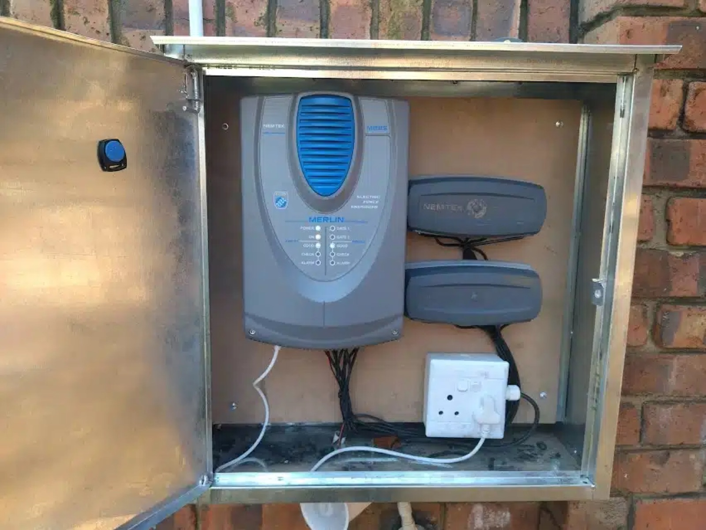
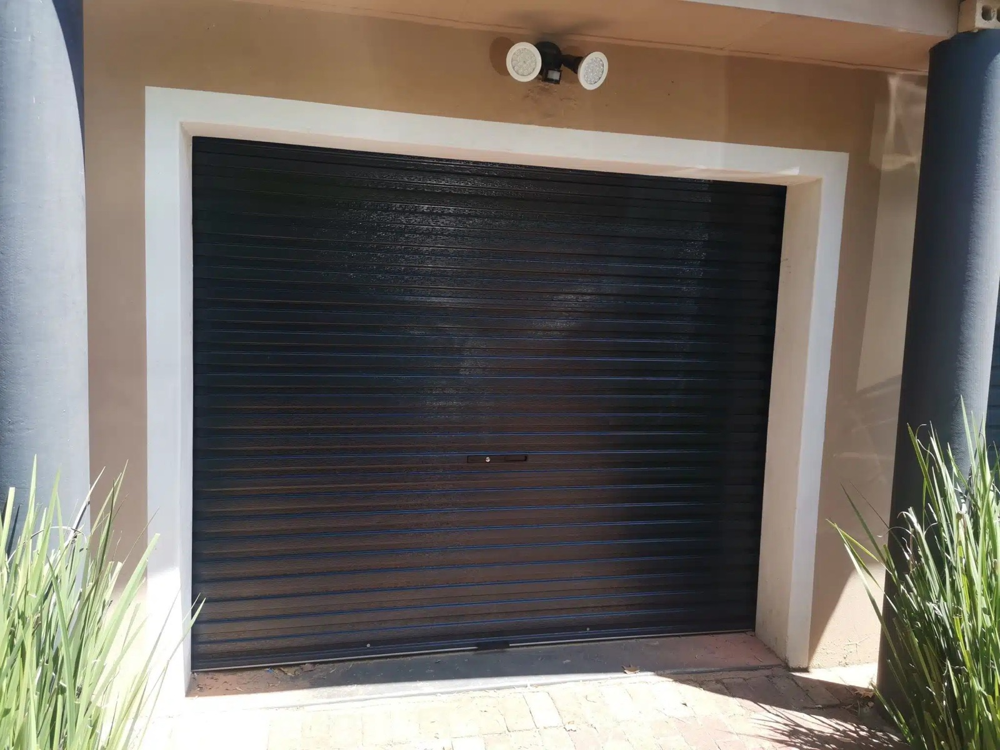
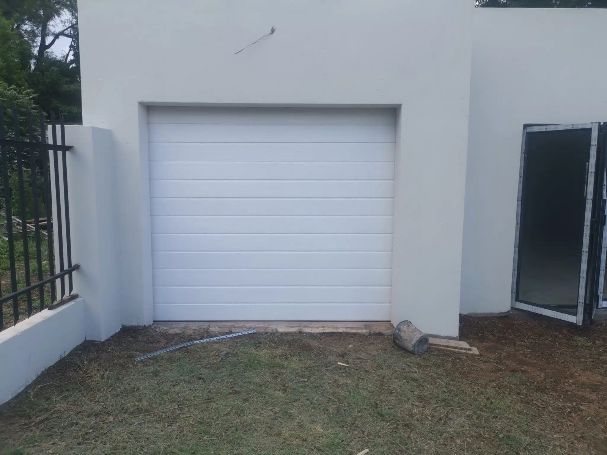
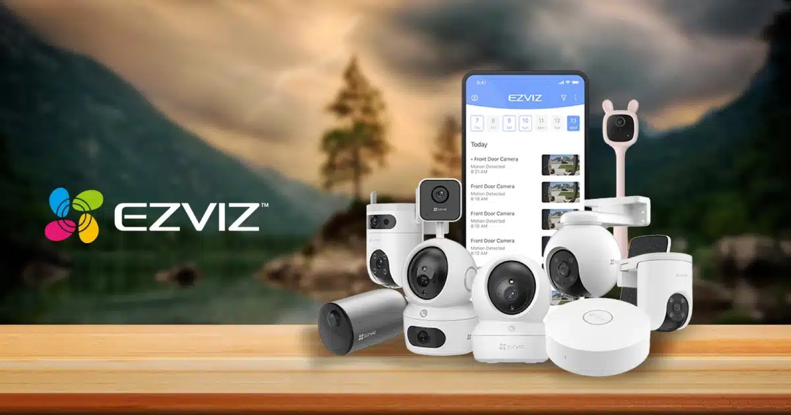
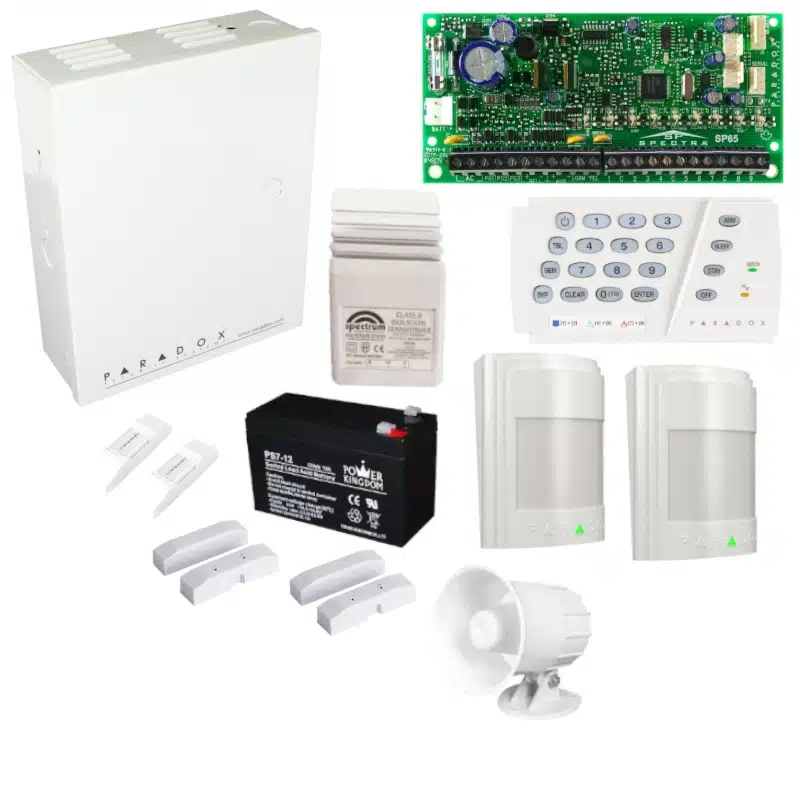
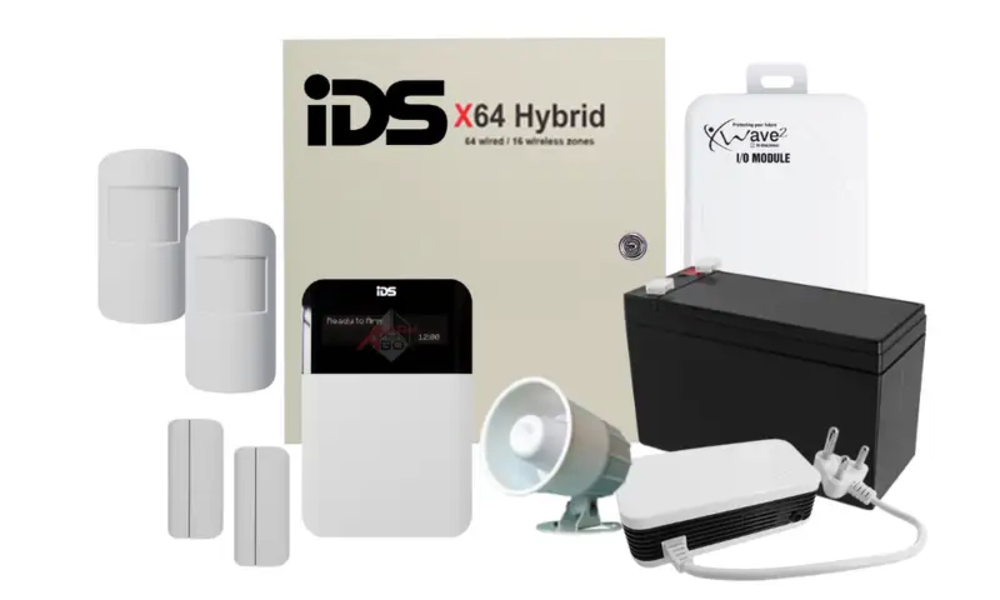

Gate motor repairs
Fault finding, spares, batteries, remotes, wheels and replacements.
Read the guide →Repairs, replacements, new installations and practical price guides for the systems that control access to your property.
 Gate Repairs Pretoria
Gate Repairs Pretoria
Choose a service below or continue into the detailed buying and pricing guides.
Fault finding, spares, batteries, remotes, wheels and replacements.
Read the guide →New sliding and swing gate automation, setup and testing.
Read the guide →Wall-top and freestanding systems, repairs and compliance.
Read the guide →New doors, repairs, springs, tracks, motors and automation.
Read the guide →Home, business and estate cameras with remote viewing.
Read the guide →Wired and wireless installations, repairs and upgrades.
Read the guide →
We repair sliding and swing gate motors, carry common spare parts and install replacement motors when an older unit is beyond economical repair. Core brands include Centurion, Gemini, ET Nice and DTS.
Batteries, chargers, PCBs, DOSS sensors, remotes, receivers, wheels, rails and mechanical faults.
Supply, installation, programming and testing with manufacturer warranty and a service guarantee.
A correctly installed and maintained gate motor generally lasts 10–15 years.
A standard gate motor battery generally lasts 2–3 years depending on use and outages.
When the model is discontinued, parts are unavailable, the damage is too severe or repeat repairs are approaching the cost of a new unit.
Only if the motor charging system specifically supports lithium. Standard sealed lead-acid or gel batteries remain the safe choice for many motors.
Indicative 2026 prices include the listed hardware and installation but exclude the energiser unless stated. Final cost depends on length, height, access and site conditions.



Included: poles or brackets, wire, insulators, strainers, clamps, fasteners and installation. Energisers and specialist accessories are quoted separately.
New installations include an electric fence certificate of compliance and workmanship warranty.
Yes. The backup battery inside the energiser keeps it operating, although some systems enter a lower-power mode during long outages.
It is a strong first perimeter layer. Combine it with alarms and CCTV for broader protection.
Prices vary with size, material, design, automation and site conditions. Standard kits include panels, rails, hardware and installation.




Roll-up doors are generally the lowest-cost option, followed by Alu-zinc sectional doors.
Compare the total installed cost, future maintenance, design and ease of automation.
Custom camera systems for homes, businesses and residential estates with remote viewing and after-sales support.


Mobile viewing, alerts and active-deterrent camera options.
Discourage theft and improve safety for staff and visitors.
Monitor entrances, boundaries and streets to support guards.
High-resolution network cameras with flexible storage and analytics.
Value-focused cameras that transmit footage to a local DVR.
Wireless IP cameras for smaller installations where cabling is difficult.
Major brands
“The picture quality is great and the technicians were friendly and professional.”Greg Cotzee · Faerie Glen
“The team explained every detail of the camera system.”Anne Govender · Montana Park
“Their work is neat and professionally done.”James Smitt · Irene

We install, repair and upgrade wired and wireless alarm systems. Motion detectors signal the panel, which activates a siren or notifies armed response when intrusion is detected.


Reliable wired and wireless systems with pet-friendly detector options.
Competitive local systems with mobile-app control options.
Advanced wireless security, long-life batteries and app control.
Established residential and commercial security platforms.
Systems generally start around R8 000. Larger wireless systems can exceed R20 000 depending on zones, brand and features.
A zone may be open, a detector battery may be low or the system may have a fault.
Paradox, IDS, Ajax, DSC and Texecom are dependable choices. Budget and required features determine the best fit.
Scheduled care for smoother operation and fewer surprise call-outs. Replacement parts are excluded unless listed.
Gate & motor
Garage door
Electric fence